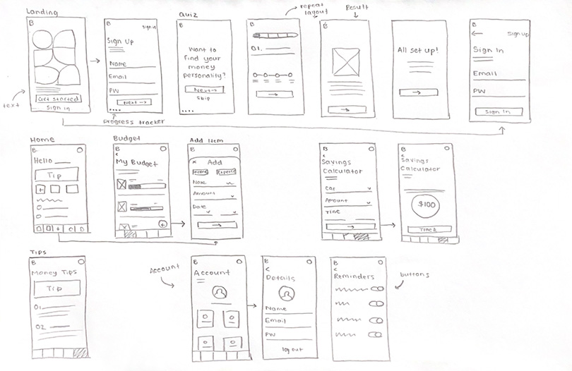

The Brief
The brief required me to create an innovative design solution to a present-day, real-world problem. This project challenged me to
deepen my knowledge of UX/UI Design and integrate new methodologies, allowing me to create a human-centred solution to better the
world we live in.
The Problem
Everyone is feeling the crunch of the rising cost of living crisis with inflation hitting levels not seen since the 1980s. However,
it is those with a lower income, often the younger generation who are completing tertiary studies or are early in their careers with
lesser pay, who are struggling the most to maintain a work-life balance.
Many young people lack basic financial literacy to budget, save and plan for the future. This was the main concern for my target
audience. From this insight, I knew education had to be the focus of my project.

The Process
Finance has a reputation for being complicated and boring. My solution had to juxtapose this stigma. Through research, both primary
and secondary, I developed possible tools and features that would teach the basics of financial literacy engagingly. Iterating
through the design thinking process with a priority on prototyping and testing allowed me to build a solution backed by research and
user feedback that appeals to my audience’s needs.


The coded app was accompanied by a brand package consisting of social media posts, posters, billboards and plans for a pop-up
participatory installation. Creating a brand identity that was bold and playful presented finance as something inclusive,
juxtaposing the mundane stigma.
The vibrant colour palette and hand-drawn illustrations reflect this positive tone of voice. The friendly logo also doubles as a
character - your financial buddy.

Solving the challenges associated with the rising cost of living was never possible with this project. The goal is that this app will
start inspiring young people to build positive money habits and to have the confidence to be their own money masters.